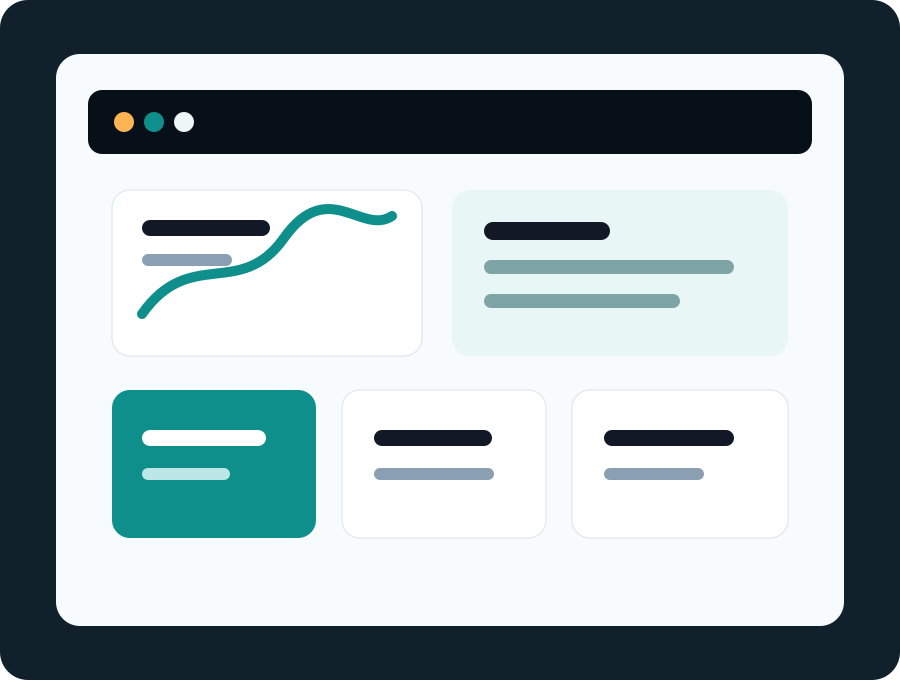
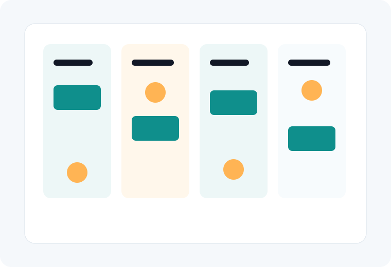

Website Design and Development
Custom WordPress builds with clean architecture, conversion-focused layouts, and maintainable templates.
Modern web design and website services
Nolan Showcase plans, designs, builds, repairs, and maintains WordPress and WooCommerce websites for teams that need dependable execution without bloated platforms.

What we do
Choose focused support for a single problem or a complete website engagement from strategy through maintenance.
Custom WordPress builds with clean architecture, conversion-focused layouts, and maintainable templates.
Updates, backups, monitoring, content support, and practical care plans for busy teams.
Bug triage, broken layouts, plugin conflicts, speed regressions, and urgent production issues.
Guided chatbot planning, implementation, and content workflows for support and lead capture.
Store setup, checkout improvements, product structure, analytics, and performance tuning.
Technical SEO foundations, events, and conversion tracking.
Process
Every engagement is organized around clear decisions, visible milestones, and practical handoff documentation.


WooCommerce
Reduced checkout friction with simplified product paths and clearer analytics events.

B2B services
Translated a complex offer into scannable service pages, trust signals, and quote flows.

Automation
Connected forms, chatbot prompts, support categories, and internal notifications.
The redesign gave our sales team pages they could send with confidence.
Maya Chen, Operations Director
They found the plugin conflict, cleaned up checkout, and gave us a practical maintenance plan.
Andre Lewis, Ecommerce Founder
The chatbot and form routing capture the right details without clutter.
Priya Shah, Client Success Lead
FAQ
Yes. We can audit, repair, redesign, or maintain an existing site without forcing a full rebuild.
Not by default. We plan content, placement, escalation flows, and integration requirements around approved tools.
Yes. Maintenance can include updates, monitoring, backups, content help, analytics review, and continuous improvement.
Request a quote
This form is markup-ready for Gravity Forms, WPForms, or Contact Form 7. Backend submission is intentionally not implemented in the preview.